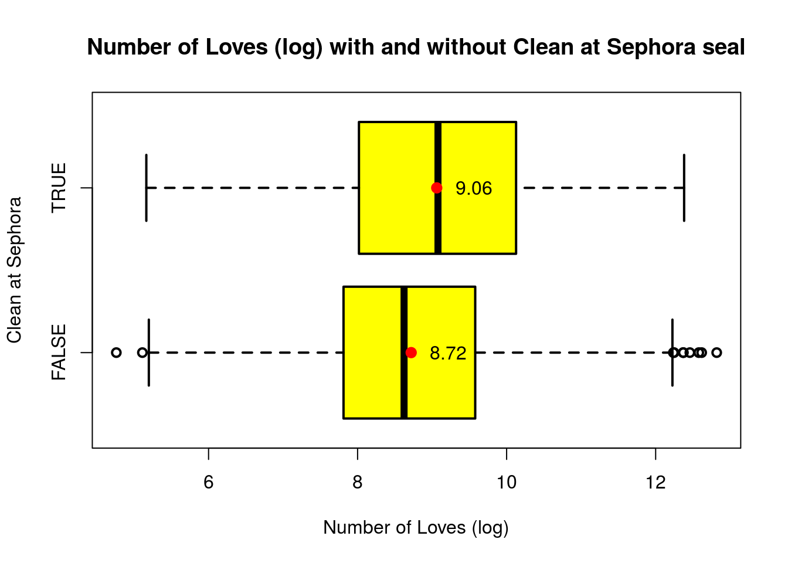
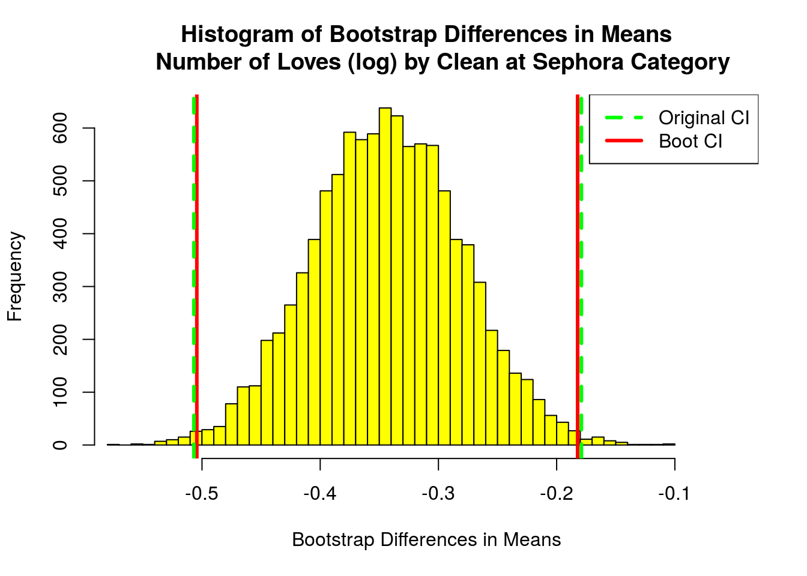
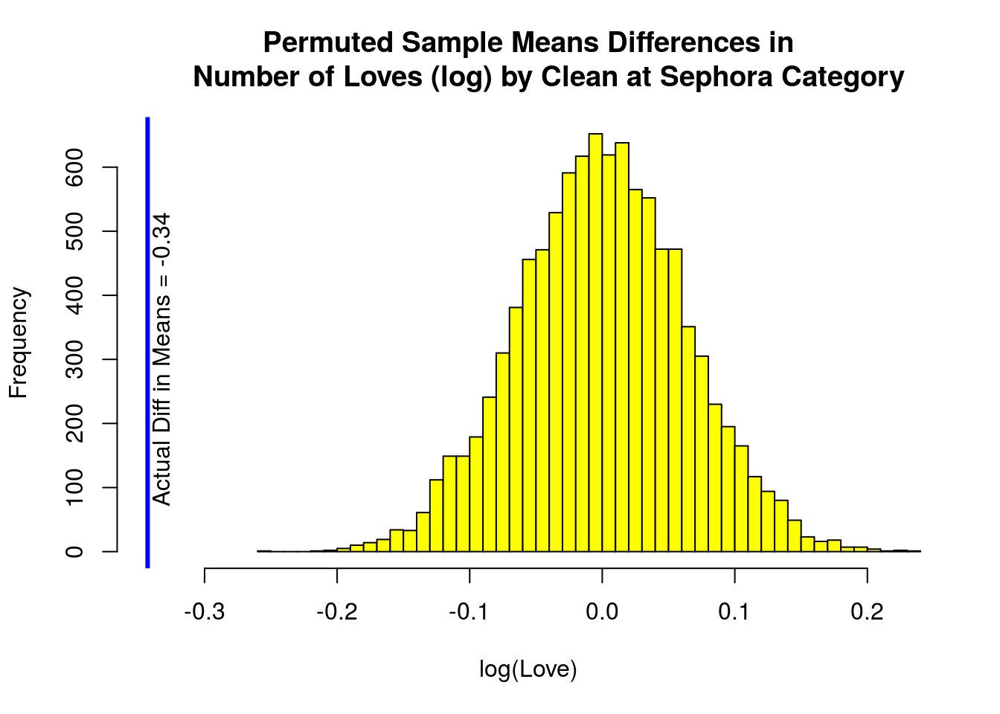

Case Study 2: Does Clean at Sephora seal makes a difference to means of logLove?
Box Plot
Clean at Sephora seal was introduced in part to encourage customers to shop clean products. We can perform a two sample t-test on logLove by whether or not the product has Clean at Sephora seal to see if this seal makes a statistically significant difference in means of log number of people recommending a product.
First, we want to take a loot at the boxplot of logLove by Clean variable.

Visually, in terms of means, medians, quantiles, and range, there are clear differences for the logLove between products that has Clean at Sephora seal and those that do not have the seal.
T-Test
We can use a two sample t-test to check wheather these differences are significant.
(test1 <- t.test(logLove ~ Clean, conf = 0.99))##
## Welch Two Sample t-test
##
## data: logLove by Clean
## t = -5.3968, df = 1487.3, p-value = 7.885e-08
## alternative hypothesis: true difference in means is not equal to 0
## 99 percent confidence interval:
## -0.5068589 -0.1790579
## sample estimates:
## mean in group FALSE mean in group TRUE
## 8.719067 9.062025The p-value for the t-test is extremely small, and the 99% confidence interval (-0.51 -0.18) doesn’t include 0. Thus, we are 99% confidence that there is a difference between means of logLove with and without Clean at Sephora seal.
Bootstrap
To be even more certain, we will now create a bootstrap interval for this t-test and compare the result with the theoretical interval.

The bootstrap interval is basically the same as the theoretical interval.
Permutation Test
We want to see how likely it is that the observed difference is due to random chance, using permutation test.
The actual difference in means of logLove is smaller than any of the difference of logLove generated from a fake sample. This suggests a 0 p-value, which is an extremely strong evidence that the observed difference is due to random chance.
Conclusion
These results suggest that there is a strong evidence that there is a difference between the means of log of the number of customers recommending products (logLove) with and without Clean at Sephora seal.